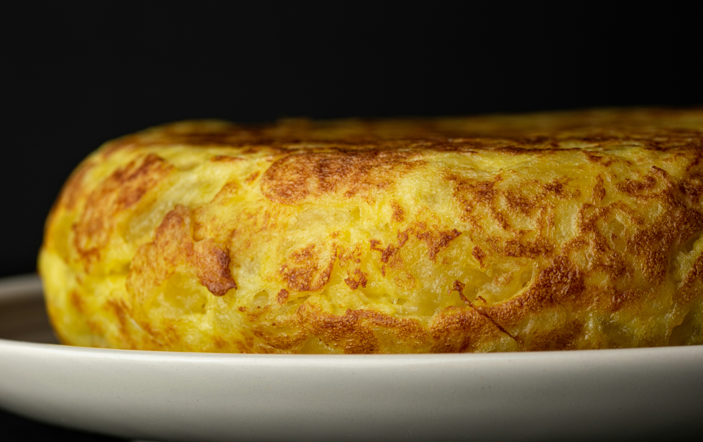

Recipes.
Spanish Omelette

Photo author blackieshoot from Unsplash
Description:
This authentic Spanish dish is perfect for breakfast, lunch, dinner, or snacks.
The Spanish tortilla is a thick omelette with eggs, potatoes and onions.
This Spanish dish is very versatile and quick to make. The tortilla (or Spanish omelette)
can be served hot or cold and is a great way of using up all kinds of ingredients.
Add any leftover vegetables, crumbled or grated cheese or cooked chorizo sausage
for a tasty but not-so-classic tortilla.
Ingredients:
- 5 big potatoes
- 5 eggs (if they aren't that big add 6)
- 1 big onion
- olive oil
- salt
Steps:
- Peel the potatoes and cut them in small chunks.
- Get a deep frying pan, and pour a generous stream of oil.Like ¾ of a cup.
- When the oil is super hot set the heat to the minimum and pour the potatoes.
- Chop the onion and add it to the potatoes with a generous amount of salt.
- Always keep the heat low!
The potatoes need to be cooked slowly until they become mushy NOT crunchy.
This process will take at least 40 minutes.
- When the potatoes and onion are nearly ready (they’ve became mushy) put the eggs in a bowl and whisk until they are foamy. Add some more salt.
- Pour the fried potatoes and onion into the bowl and mix.
- Put a deep, round and small frying pan with a tiny bit of olive oil on the stove.
- When the pan is hot pour the mix and fry for a minute at medium heat.
- Cover the frying pan with a plate and turn it upside down. Slide it back into the pan to fry the other side.
- Cook for another minute at medium heat and then serve it on a plate. The interior should be a bit runny and not too dry.